MLT End Term30 questions50 marks14 MCQ · 14 SA · 2 MSQImprovement / afternoon / QDD3
Elapsed 00:00
Q1MCQ2 marks
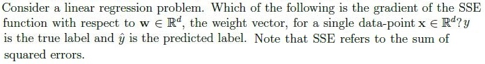
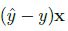
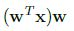
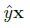
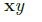
Q2MCQ3 marks
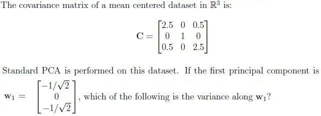
1
2
3
6
Q3MCQ3 marks
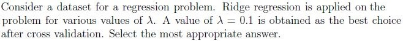
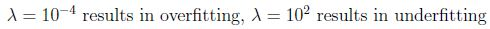
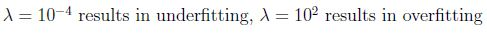
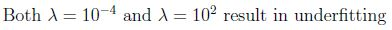
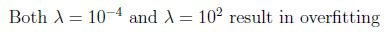
Q4MCQ3 marks
Match the characteristics given below with the appropriate ensemble technique. 1. Decision stumps 2. Deep decision trees 3. Parallel execution 4. Sequential execution
Bagging → (2), (3); Boosting → (1), (4)
Bagging → (1), (4); Boosting → (2), (3)
Bagging → (1), (3); Boosting → (2), (4)
Bagging → (2), (4); Boosting → (1), (3)
Q5MCQ3 marks
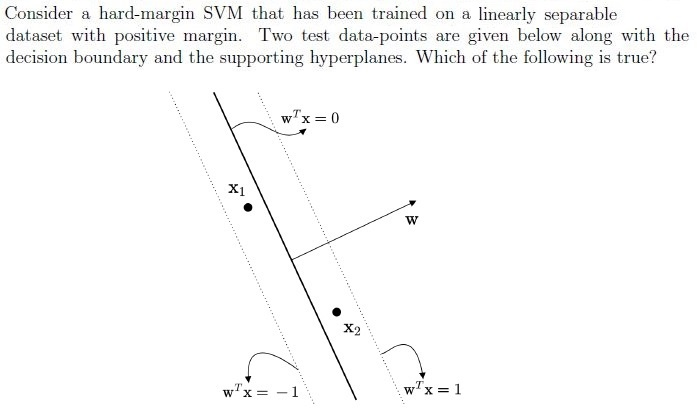
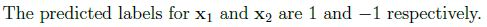
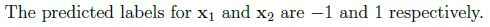
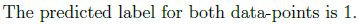
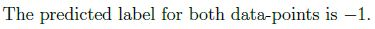
Q6MCQ3 marks
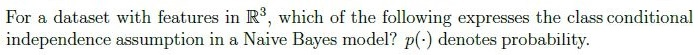
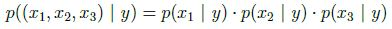
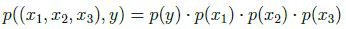
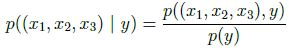
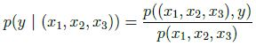
Q7MCQ3 marks
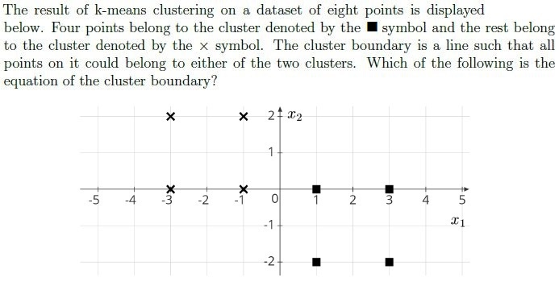
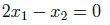
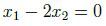
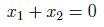
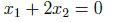
Q8MCQ3 marks
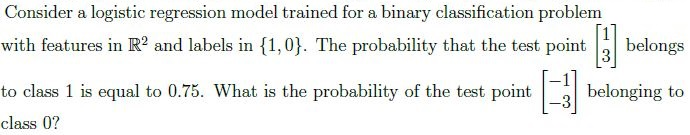
0.75
0.25
0.5
0.15
Q9MSQ3 marksselect all that apply
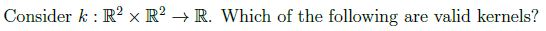
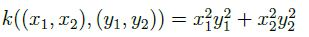
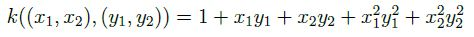
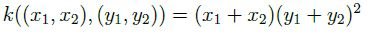
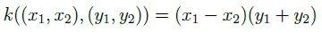
Q10MSQ3 marksselect all that apply
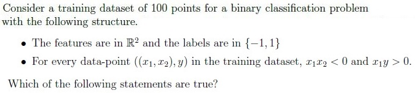
The dataset is linearly separable with a positive margin.
The perceptron algorithm will terminate after a finite number of iterationswhen trained on this dataset.
The dataset is linearly separable, but the margin may be zero.
The dataset is not linearly separable.
Q11SA3 marks
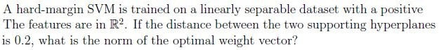
Q12SA3 marks
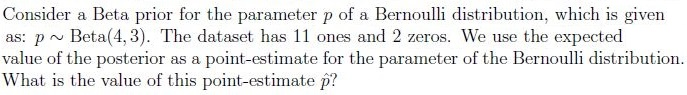
Q13SA3 marks
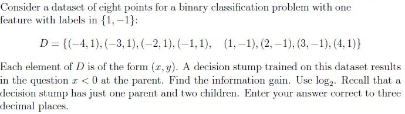
Comprehension passage - the questions below it refer to this
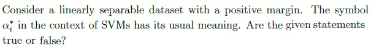
Q14MCQ1 mark
The weight vector output by the perceptron algorithm can be expressed as a linear combination of the data-points where the coefficients of the linear combination are integers.
TRUE
FALSE
Q15MCQ1 mark
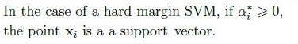
TRUE
FALSE
Q16MCQ1 mark
If a soft-margin SVM is trained on this dataset, the optimal weight vector it returns will be the same as the one returned by a hard-margin SVM, irrespective of the value of the hyperparameter C.
TRUE
FALSE
Comprehension passage - the questions below it refer to this
Based on the above data, answer the given subquestions.
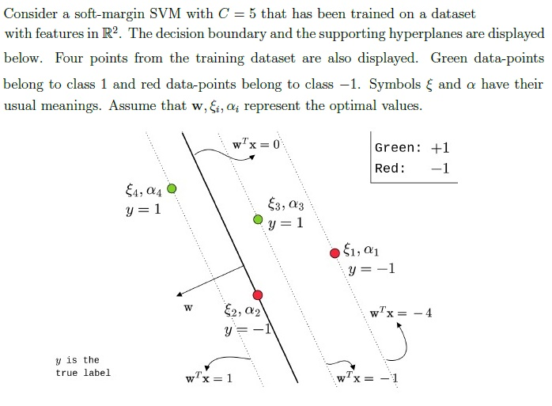
Q17SA0.5 marks
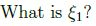
Q18SA0.5 marks
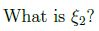
Q19SA0.5 marks
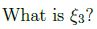
Q20SA0.5 marks
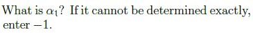
Q21SA0.5 marks
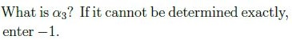
Q22SA0.5 marks
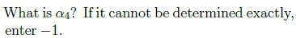
Comprehension passage - the questions below it refer to this
Based on the above data, answer the given subquestions.
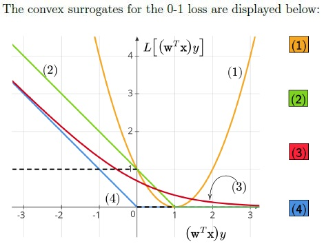
Q23SA0.5 marks
Enter the number corresponding to the logistic loss.
Q24SA0.5 marks
Enter the number corresponding to the (SVM) hinge loss.
Q25SA0.5 marks
Enter the number corresponding to the perceptron loss.
Q26SA0.5 marks
Enter the number corresponding to the squared loss.
Q27MCQ1 mark
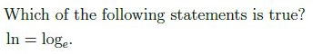
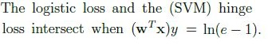
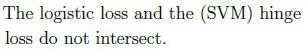
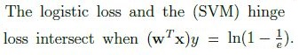
Comprehension passage - the questions below it refer to this
Based on the above data, answer the given subquestions.
Q28SA1 mark
How many learnable parameters does this network have? Ignore the biases in the computation.
Q29MCQ1 mark
What is the most appropriate choice of activation function for the output layer if the binary cross-entropy loss is used?
Auto-generated summary from the source site. Handy as a checklist; the lessons above explain each idea from scratch.
Here’s a structured summary of core topics, concepts, principles, and equations for the Diploma-Level Machine Learning Techniques exam, along with Mermaid knowledge graphs to visualize relationships.
1. Core Topics & Key Concepts
A. Linear Regression & Gradient Descent
Key Concepts:
Sum of Squared Errors (SSE):SSE=∑i=1n(yi−y^i)2, where y^i=wTxi.
Gradient of SSE (for a single data point):∇wSSE=−2(y−wTx)x. (From Q2: Correct option was missing, but the gradient is derived from ∂w∂(y−wTx)2.)